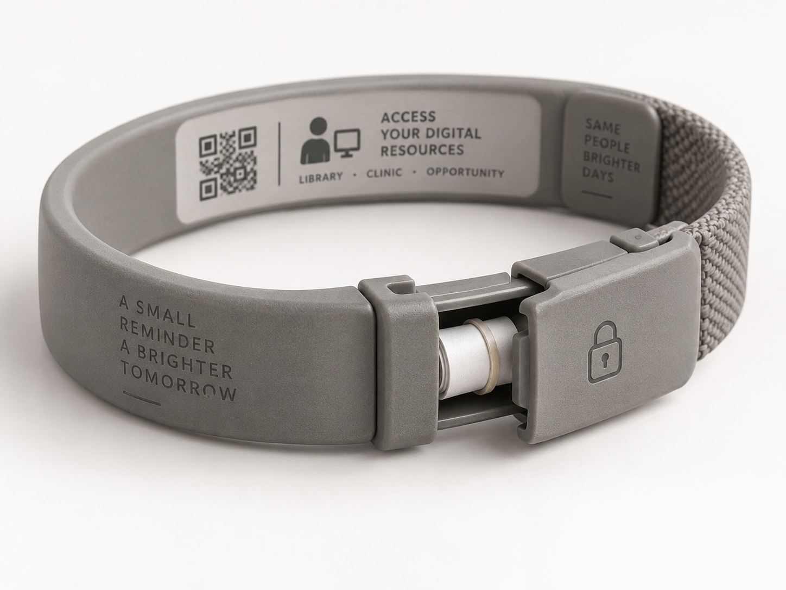

A secure digital locker for people whose physical possessions are fragile, lost, stolen, or thrown away.
Phones die. Bags disappear. Paperwork gets soaked. IDs vanish. Passwords are forgotten.
Without continuity, services become harder to reach exactly when they are most needed.
The gateway is the ability to remember a secure password without exposing it.
The bracelet carries a private reminder — never the password itself.
A trusted social worker or outreach worker helps create a strong password and a clue only that person would understand.
Once the account exists, it can hold copies of the things most easily lost.
Your phone may disappear. Your backpack may disappear. The computer you use today may not be yours tomorrow.
But your digital possessions can stay with you.
The device is temporary. The Drive is the locker.
StreetLocker should be reachable from any safe node: a cell phone when available, a public library computer, a clinic, a shelter, or a case worker’s device.
It should contain no password, Social Security number, date of birth, medical details, or other sensitive information.
It stores only a reminder. The person remains the key.
Not in a bag. Not on a dying phone. Not in someone else’s filing cabinet.
In a secure account they can reach again.